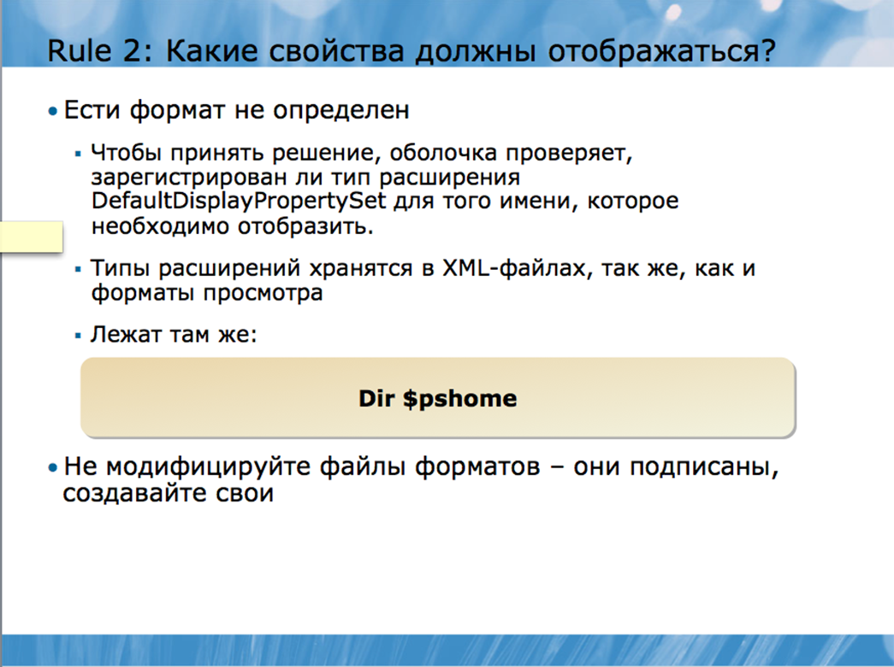
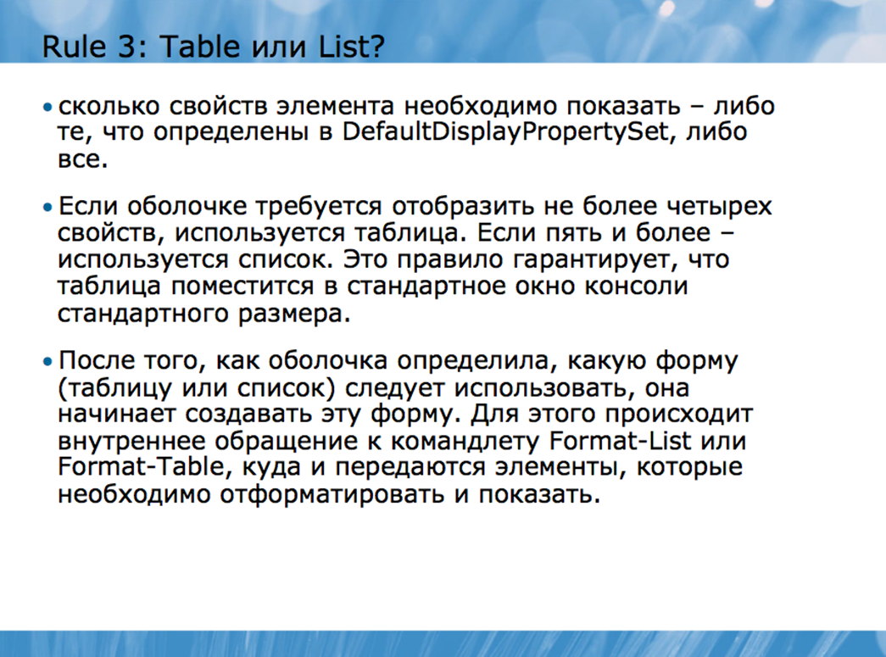

Не забывайте, что почти все командлеты Windows PowerShell работают с операционной системой и другими элементами, содержащими огромное количество информации. Поэтому, будет непрактичным пытаться вывести на дисплей всю информацию – на компьютерном мониторе просто не хватит места для этого, а осуществлять горизонтальную прокрутку для поиска нужных данных не очень-то удобно. Поэтому, по умолчанию в оболочке отображается часть информации в форме, наиболее удобной для восприятия. Например, процесс может иметь несколько свойств, каждое из которых передает потенциально важную информацию.
Однако ни одного по-настоящему эффективного способа отобразить всю эту информацию в удобном формате нет, поэтому, командлет Get-Process, передавая выходные данные, не пытается этого сделать. Вместо этого оболочка показывает только семь свойств одного процесса, и делает это в довольно простой и удобной форме – в виде таблицы. Тем не менее, эти параметры не являются жестко запрограммированными, и при желании, приложив немного усилий, вы можете отменить их, или даже заменить новыми. Все стандартные настройки вы получаете в файлах XML-формата при установке Windows PowerShell.
Все форматирование по умолчанию основано на имени типа того элемента, который отображается. Имя типа можно увидеть, передав необходимый элемент по конвейеру в командлет Get-Member; после того как конвейер доставляет множество различных типов элементов, оболочка, как правило, выбирает по умолчанию формат выходных данных, основанный на имени типа первого элемента в конвейере.
Когда оболочке требуется использовать форматирование по умолчанию, она следует ряду правил, чтобы достичь этого.
Правило первое – определен ли формат.
После того, как оболочка определила имя типа того элемента, который требуется отобразить, первым делом она проверяет, определен ли формат просмотра для данного типа. Форматы просмотра указаны в специальных конфигурационных XML-файлах; некоторые из этих файлов устанавливаются вместе с Windows PowerShell. Попробуйте запустить следующую команду:
Dir $pshome
Данная команда используется для нахождения файлов, которые имеют расширение .format.ps1xml.
Файлы, название которых имеет расширение .format.ps1xml, содержат определенный формат просмотра. Оболочка загружает эти файлы каждый раз при запуске и хранит информацию в памяти в течение одной сессии.
Файлы .format.ps1xml, включенные в установочный пакет оболочки, поставляются компанией Microsoft® и обладают цифровой подписью Microsoft. Эти специфические файлы загружаются даже тогда, когда скрипты отключены, поэтому, оболочка может содержать множество параметров «по умолчанию». Цифровая подпись гарантирует, что файлы не могут быть просто изменены без предупреждения; если же файл каким-либо образом изменить (даже случайно), то подпись прекратит действовать, и оболочка перестанет загружать этот файл автоматически.
Если оболочке необходимо отобразить элемент, для которого уже определен формат просмотра, она отобразит его именно в этом формате. Если предусмотрено несколько вариантов просмотра, то оболочка выберет тот вариант, который первым записан в памяти. Это означает, что порядок, в котором XML-файлы загружены в память, имеет значение, поскольку первый из них всегда будет иметь преимущество над последующими.
Форматы просмотра могут быть очень простыми – список, таблица, широкая или пользовательская форма. Также они могут быть и очень сложными – с ярлыками и расширениями. Они могут даже содержать скриптовые коды для подсчета или получения значений тех или иных колонок таблицы.
Если формат просмотра не определен, в силу вступает второе правило.

Это правило определяет, какие свойства элемента должны отображаться. Если формат предопределен, то в нем уже указано, какие свойства должны отображаться, следовательно, второе правило не нужно. Если нет – оболочке необходимо решить, какие свойства показать. Чтобы принять решение, оболочка проверяет, зарегистрирован ли тип расширения DefaultDisplayPropertySet для того имени, которое необходимо отобразить. Типы расширений хранятся в XML-файлах, так же, как и форматы просмотра. Если вы запустите команду Dir $pshome, то увидите XML-файлы, определяющие типы расширения. Имя этих файлов имеет расширение .types.ps1xml, вместо .format.ps1xml.
Файлы .types.ps1xml, так же, как и .format.ps1xml, обладают цифровой подписью Microsoft и не подлежат изменению.
В оболочке хранятся типы расширения для многих имен типов элементов. Однако в действительности их намного больше – DefaultDisplayPropertySet является лишь одним из многих доступных расширений. Только то, что имя типа появилось в файле a .ps1xml не обязательно означает, что расширение DefaultDisplayPropertySet зарегистрировано. Тем не менее, если имя было зарегистрировано, оболочка будет использовать свойства, указанные в расширении, каждый раз. Если нет – будут отображаться все свойства элемента (правило номер 3).
После всех перечисленных действий оболочка просто задает себе вопрос: сколько свойств элемента необходимо показать – либо те, что определены в DefaultDisplayPropertySet, либо все.

Если формат просмотра был определен правилом №1, то правило №3 не учитывается. При заранее определенном формате просмотра всегда уточнаяется то, в каком виде будут отображаться свойства – список, таблица, и.т.д.
Если оболочке требуется отобразить не более четырех свойств, используется таблица. Если пять и более – используется список. Это правило гарантирует, что таблица поместится в стандартное окно консоли стандартного размера.
После того, как оболочка определила, какую форму (таблицу или список) следует использовать, она начинает создавать эту форму. Для этого происходит внутреннее обращение к командлету Format-List или Format-Table, куда и передаются элементы, которые необходимо отформатировать и показать.
Рассмотрим вкратце, как происходит форматирование в рамках оболочки. В конце каждого командного конвейера находится командлет Out-Default. Он всегда находится там, даже если вы не указали его в командной строке. Его работа заключается в том, чтобы принять окончательные выходные данные из конвейера и передать их командлету Out-Host, который отвечает за вывод информации на экран. Если вы наберете команду:
Get-Process
То вы запускаете (пусть даже не осознавая этого) команду:
Get-Process | Out-Default
А в обычном окне консоли или Windows PowerShell ISE это означало бы то же самое, что и:
Get-Process | Out-Host
Именно поэтому последние командлеты используются по умолчанию: выходные данные внутренне отправляются на Out-Default, а затем – на Out-Host.
Но что будет, если вы вручную наберете другое место назначения, скажем, используя командлет Out- File?
Get-Process | Out-File c:\procs.txt
Большинство командлетов Out- не производят никаких выходных данных, а значит, не отправляют ничего в конвейер (Out- String – особенный случай, который является исключением из правила). Поэтому, даже если предыдущая команда была передать данные в файл, в действительности конвейер (даже если вы не осознаете этого) будет выглядеть так:
Get-Process | Out-File c:\procs.txt | Out-Default
А функционально происходить будет следующее:
Get-Process | Out-File c:\procs.txt | Out-Host
Вы не увидите ничего на экране при запуске команды, поскольку командлет Out-File не производит никаких выходных данных. Он лишь принимает входящие данные и передает текстовую интерпретацию этих данных в файл, но после этого в конвейере ничего не остается. Хотя Out-Default продолжает работать, он не получает никаких данных, поэтому на экран ничего не выводится.
Командлеты Out- технически неспособны «понять» такие вещи как процессы или службы. Они работают только со специальными инструкциями по форматированию, которые производятся только командлетами Format-. Как только командлет Out- обнаруживает, что ему приходится иметь дело с чем-то другим, кроме инструкции форматирования, он автоматически запускает форматирующую систему в оболочке, основываясь на трех правилах, которые мы рассмотрели ранее. Данные передаются в форматирующий командлет, после чего поступают обратно в командлет Out-.Поэтому, когда вы запускаете команду:
Get-Process
В действительности оболочка выполняет намного больше действий, и весь процесс выглядит так:
Get-Process | Out-Default | Out-Host | Format-Table | Out-Host
Форматирующая система определяет, какой из Format- командлетов следует использовать. В данном случае для выходных командлета Get-Process в оболочке зарегистрирован определенный формат просмотра – таблица, поэтому, используется командлет Format-Table.
Вы можете извлечь пару довольно важных уроков, проанализировав поведение оболочки:
• Как только командлет Format- начинает работу, первоначальные выходные данные теряются, поскольку подвергаются форматированию. Сравните результат двух команд:
Get-Process | Get-Member
или
Get-Process | Format-Table | Get-Member
• Командлет Format-Table поглощает элементы процесса и превращает их в инструкции по форматированию, которые понимает только командлет Out-. Поэтому, командлет Format- , как правило, должен быть последним в командной строке.
• Командлеты Out-, как уже упоминалось ранее, не производят никаких выходных данных. Поэтому, если они используются, то располагаются в самом конце командной строки (кроме командлета Out-String, который является исключением). Если в цепочке команд используются и командлет Format-, и командлет Out-, то Format- будет предпоследним, а Out- последним.
Все командлеты Out- способны воспринимать одни и те же инструкции по форматированию. Поэтому, обе команды:
Get-Process | Fl * | Out-Host
Get-Process | Fl * | Out-File c:\proclist.txt
производят идентичные выходные данные; разница заключается лишь в ширине (некоторая информация может быть сокращена или свернута), а также в том, что в пером случае данные выводятся на экран, а во втором – сохраняются в файл.
Вы можете создать файл формата просмотра (.format.ps1xml), содержащий более одного варианта просмотра для данного имени типа. Так, файл DotNetTypes.format.ps1xml содержит более одного варианте просмотра для имени System.Diagnostics.Process.
Каждый раз при запуске системы форматирования по умолчанию используется тот формат просмотра, который первым зарегистрирован в памяти. Поэтому, команда Get-Process произведет те же самые выходные данные, что и Get-Process | Format-Table. Данные будут идентичными потому, что в первом случае вы не уточнили формат просмотра. Оболочка следует правилу №1, находит зарегистрированные варианты просмотра в DotNetTypes.format.ps1xml, использует самый первый вариант для имени System.Diagnostics.Process. Этот первый вариант – таблица. Во втором случае вы уточнили, что данные должны быть отображены в таблице, что совпало с форматом просмотра, используемым по умолчанию. Однако вы могли бы вручную указать другой формат просмотра с помощью параметра –view командлета Format-. Здесь существует одно правило. Вариант просмотра, который вы указываете, должен совпадать с параметром командлета Format-. Другими словами, если для имени Diagnostics предусмотрен только один вариант просмотра – таблица, то вы должны использоват командлет Format-Table. Если же вы попытаетесь запустить команду:
Get-Process | Format-List –view diagnostics
а варианта отображения имени diagnostics в виде списка не существует, вы увидите ошибку, даже если вариант показа в форме таблицы существует.
Например, данная команда будет работать:
Get-Process | Ft –view priority
так как для имени Priority предусмотрен формат просмотра – таблица. Однако следующая команда работать не будет:
Get-Process | Fl –view priority
потому что командлет Format-List не может использовать формат таблицы, предусмотренный для имени Priority.
Вы можете создавать в оболочке свои собственные файлы .format.ps1xml для новых или дополнительных вариантов просмотра имен по умолчанию.
Не пытайтесь изменить файлы .format.ps1xml с цифровой подписью Microsoft, которые поставляются вместе с Windows PowerShell.
Вместо этого вы можете создавать новые необходимые вам файлы в формате XML. Файлы Microsoft можно использовать в качестве образца, но ни в коем случае не нужно пытаться их изменить. После того, как вы создали файл, используйте командлет Update-FormatData, чтобы загрузить его в оболочку и зарегистрировать в качестве варианта просмотра по умолчанию в системе форматирования. При запуске этого командлета вы должны указать путь к вашему XML-файлу. Для этого необходимо следующее:
• Используйте параметр –append, чтобы загрузить ваш файл после существующего в памяти оболочки. Это удобно в тех случаях, когда необходимо создать дополнительный вариант просмотра для того или иного имени. Но если в оболочке уже был предусмотрен другой формат просмотра, то по умолчанию будет использоваться именно этот, существующий вариант.
• Если вы хотите, чтобы созданный вами файл сохранился в памяти перед существующим, используйте параметр –prepend. В данном случае по умолчанию будет использоваться именно ваш файл.
Подробная инструкция создания файлов .format.ps1xml не предусмотрена в рамках данного курса. В некоторых книгах этот вопрос раскрыт более подробно, например, в Windows PowerShell v2.0: TFM под авторством Don Jones и Jeffery Hicks.
Не забывайте о том, что любые изменения, вносимые пользователем в оболочку, действуют только в течение одной сессии; оболочка не загружает созданные вами файлы автоматически каждый раз. Если вы хотите, чтобы созданный вами файл был доступен каждый раз при запуске новой сессии, создайте специальный скрипт для Windows PowerShell, который будет запускать командлет Update- FormatData каждый раз при открытии нового окна.
Дополнительные данные в выводе
Для того чтобы добавить пользовательские свойства к объекту, используется команда Select-Object. Например, чтобы добавить атрибут ComputerName к элементу Computer, у которого уже есть атрибут Name, можно запустить команду:
Get-ADComputer –filter * |
Select *,@{Label='ComputerName';Expression={$_.Name}
Команда Select-Object обеспечивает доступ ко всем свойствам компьютеров, которые были определены с помощью Get-ADComputer и группового символа *. Помимо этого, Select-Object добавляет новые свойства этим компьютерам. В данном случае новое свойство имеет ярлык ComputerName, что в командной конструкции обозначено с помощью команды Label. Такая часть конструкции как Expression показывает значение, которое содержит данное свойство. Expression сопровождается скриптовым блоком, заключенным в фигурные скобки. Внутри этого скриптового блока структурный нуль $_ указывает, на что направлена команда Select-Object – в данном случае, это компьютеры. Точка после $_ указывает на то, что вы хотите обратиться к существующему свойству, в данном случае, Name.
Командлет Format-Table принимает тот же самый синтаксис для создания новых колонок в таблице. Это означает, что если вы хотите просто добавить свои собственные колонки в таблицу, вместо того, чтобы придавать новые свойства объекту, вы можете запустить команду:
Get-ADComputer –filter * |
Ft DnsHostName,Enabled,@{Label='ComputerName';Expression={$_.Name}}
Обратите внимание, что для создания новых колонок в таблице используется та же самая конструкция, а такие свойства компьютеров как DnsHostName и Enabled помещаются в собственные новые колонки.
В чем же разница? Если вам необходимо изменить элемент в конвейере, а затем передать его в другой командлет, вы можете использовать опцию Select-Object для добавления новых свойств элементу. Если же вы просто хотите создать новую колонку в таблице, используйте опцию Format- Table. В принципе, не случится ничего страшного, если вы используете опцию Select-Object, а затем передадите результат по конвейеру в командлет Format-Table для вывода данных в виде таблицы. Обе техники дают один и тот же результат. Просто не забывайте о том, что командлет Format-Table обычно идет в самом конце конвейера, и что данные из него можно передавать только командлету Out-. Элемент Expression в конструкции также может содержать математические знаки, такие как +, -, * или /, которые обозначают, соответственно, прибавление, вычитание, умножение или деление. Например, таким образом вы можете добавить значения двух свойств:
Get-WmiObject Win32_LogicalDisk |
Ft DeviceID,Size, @{Label='SpaceUsed';Expression={$_.Size - $_.FreeSpace}}
Здесь командлету Format-Table дана команда создать колонки для свойств логических дисков DeviceID и Size, которые были извлечены командлетом Get-WmiObject. Вдобавок к этим двум колонкам он создает третью, под названием SpaceUsed. Эта колонка содержит значение, равное разнице между общим размером диска и оставшейся свободной памятью. Как вы видите, здесь используется знак вычитания для осуществления математического вычисления.
Техника использования $_ в качестве структурного нуля для обозначения элемента, на который направлена команда, а также последующая точка, указывающая, к какому свойству следует обратиться, является ключевой техникой в Windows PowerShell. Позже вы еще неоднократно будете встречаться с этим синтаксисом, поэтому, постарайтесь свыкнуться с ним.
Такой элемент командной строки как Expression может содержать практически любой скрипт или команду Windows PowerShell. В первом примере это был просто доступ к атрибуту Name тех элементов, которые поступают в командлет Format-Table, хотя вы можете использовать намного более сложные значения, например:
get-adcomputer -filter * |
ft dnshostname,@{
Label="OSVersion";
Expression={
(gwmi win32_operatingsystem -comp $_.Name).caption
}
}
Это уже достаточно сложная команда. Вот что здесь происходит:
• Командлет Get-ADComputer извлекает данные обо всех компьютерах в домене (хотя и с осторожностью, так как в большом домене данный процесс может быть ресурсоемким).
• Данные о компьютерах передаются в командлет Format-Table.
• Format-Table показывает атрибут DNSHostName.
• Также Format-Table создает дополнительную колонку под названием OSVersion. Содержимое этой колонки – это данные, которые отображает командлет Get-WmiObject (использует alias gwmi).
• Get-WmiObject соединяется с именем компьютера, указанным в атрибуте Name входящих данных в Format-Table – это то имя, которое мы показываем.
• Командлет Get-WmiObject находится внутри круглых скобок, которые обозначают, каким должен быть результат выполнения команды. В данном случае результатом является информация об операционной системе компьютера.
• Точка после скобок обозначает, что мы хотим получить доступ к свойству информации WMI, полученной в результате выполнения команды. В данном случае мы получаем доступ к атрибуту Caption операционной системы, который представляет собой текстовое описание имени и версии операционной системы.
Выходные данные для отдельно взятого компьютера будут выглядеть так:
dnshostname OSVersion
----------- ---------
server-r2.company.pri Microsoft Windows Server 2008 R2 Standard
Иногда может потребоваться отобразить выходные данные в таком виде, чтобы их можно было просматривать через веб-браузер. Командлет ConvertTo-HTML конвертирует элементы конвейера в форму таблицы на базе HTML. Этот командлет не записывает HTML в файл, он просто помещает HTML-текст в конвейер. Однако вы можете сохранить его в файл, используя командлет Out-File. Типичным примером использования данного командлета может быть следующая команда:
Get-EventLog Security –newest 20 | ConvertTo-HTML |
Out-File events.htm
Не отправляйте выходные данные командлета Format- в ConvertTo-HTML; помните о том, что командлеты Format- производят только инструкции для форматирования, а значит, если вы предпримите такую попытку, в HTML будут конвертированы именно сами инструкции. Если вы хотите посмотреть, каким будет результат, попробуйте запустить команду:
Get-Process | Format-Table | ConvertTo-HTML | Out-File confusing.htm
HTML, произведенный командлетом ConvertTo-HTML, является хорошо оформленным, «чистым» HTML-текстом, а значит, не содержит никакой информации, касающейся форматирования. В результате мы получаем простой файл. Однако, используя различные параметры командлета ConvertTo- HTML, можно уточнить некоторую дополнительную информацию, например:
• Текст, который необходимо поместить перед HTML-таблицей.
• Заголовок страницы.
• Текст, который необходимо поместить после HTML-таблицы.
• Ссылка CSS, которая может использоваться для определения дополнительных опций форматирования: шрифт, цвет и.т.д.
Не забывайте, что Windows PowerShell использует официальные термины для описания элементов в конвейере и их свойств. Мы уже упоминали о них ранее. Данные термины являются всего лишь словами и не несут никакого значения сами по себе. И все же, вам следует привыкнуть к регулярному использованию этих терминов – так вам будет проще общаться с другими пользователями оболочки. В данном модуле слово «элемент» использовалось для обозначения данных, которые командлет помещает в конвейер. Например, командлет Get-Process помещает в конвейер элемент «процесс». Более официальный термин, который используется вместо слова «элемент» - это «объект». Поэтому, можно также сказать, что командлет Get-Process помещает в конвейер объекты процесса.
Все эти объекты имеют атрибуты. Для процесса атрибутами могут быть имя, ID, объем занимаемой памяти и.т.д. Официальное название атрибутов – свойства. Поэтому, можно сказать, что процесс имеет свойство имени, свойство ID, и.т.д.